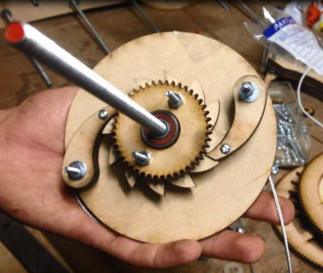
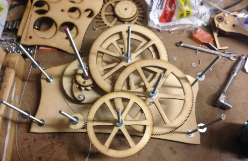
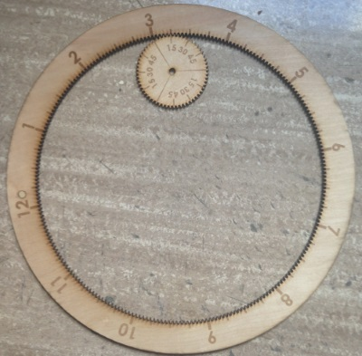
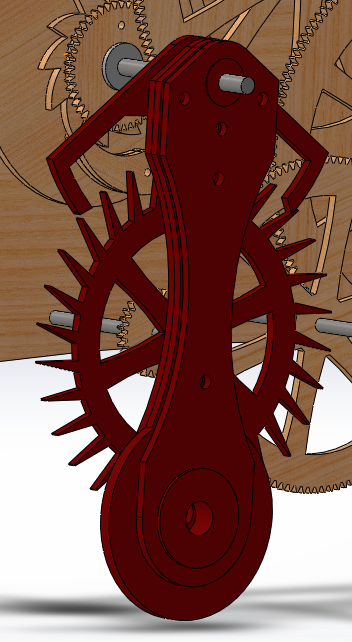

2017 Update I'm finally ready to say that I won't get back to this project. After a few years in school and a lot more experience, I realize how far this design is from a clock that could actually work. To list a few issues: The gears are too thin, the shafts need better bearings, the whole thing is too heavy to tick, the burnt wood surface has too much friction. I'm not really interested in going back and trying to redesign it to make it work, but I'm still happy that I did it! This was a fun and ambitious project that taught me about engineering and has a special place in my heart. Going back and reading this post is pretty funny to see how certain I was that it would work. Anyway, it's important to post about failed projects as well as successful ones so I'm keeping this post as it was when I first wrote it in high school.
This idea has been a long time coming. I was originally inspired by a clock that I saw in this video with an internal gear as the dial. I thought this was such a cool idea that I had to try to make one of my own. My design is a little different from that in the video because the dial pinion in my clock has the minutes printed on it.
I’ve been through a lot of iterations of this idea. I originally wanted to power it with a motor
and an encoder being timed by an Arduino. Another option would be to use an AC motor that plugs
in to the wall and uses the 60 hz of the power grid for timing (this is how the movement is timed in most
clocks that you plug in to the wall). I had trouble finding the right motor and encoder to use, and after a while
I realized that it would be a lot more fun and interesting to go mechanical with it.
I designed all of the parts in Solidworks to be laser cut out of Birch plywood.
Here I’ll explain a bit about how the clock works, but if you’re really interested I can’t recommend
this video enough. Old-timey mechanical
videos are always so informative (here’s one
of my favorites explaining how a differential works).
This is the mechanism that drives the clock. In the photo you can see a cable attached to the back end of this mechanism. This cable will connect to a heavy weight that drives the clock. The weight will turn the drum on the back side of this part, turning the gear on the front. Once the weight reaches the end of its travel the ratchet mechanism will allow the drum to be wound back up without having to turn the clock backwards. The whole mechanism sits on ball bearings.
One turn of this ratchet equals 1 hour on the dial. I designed a 30 tooth escape wheel for this clock. Because I don’t quite have room for a 3.577 kilometer pendulum (4.3 times the height of the Burj Khalifa) or a 3,600 tooth escape wheel, we’re going to have to slow down the rotation a bit. That’s where the gear train (wheel train for clock people) comes in.
You can see in the image how the wheel train connects to the ratchet. At the very end of the train will be the pendulum and escape mechanism. Connected to the first set of gears on the top-center arbor will be the dial.
This part of the clock may not be terribly interesting mechanically, but it’s the heart of the design. This entire project started because I saw a clock dial that looked like this and I wanted to make one. To ensure the hour dial stays on there will be two minute dials glued together giving it more width to ride on. I’m not sure yet if this will be sufficient to keep the dial from falling off. One cool bonus of this design is that changing time zones is really easy. The hour dial isn’t connected to the clock, it just hangs on top of it so you can just move it to where it needs to go to set the time. If, however, the minute dial is off, you’ll have to unscrew it and re-attach it in the right position.
This is what I think is the coolest part of the clock. It’s important to remember here that the pendulum isn’t driving the clock, it’s timing it. The pendulum is letting the weight at the other end of the mechanism fall ever-so slightly every time it goes back and forth. Because there’s some friction in any pendulum, if left alone, the pendulum would stop swinging. These are the two functions of the escapement. It allows the wheels to turn a few degrees every time the pendulum passes by, and it gives the pendulum little nudges to keep it going.
My particular escapement is called a Graham Deadbeat Escapement. It’s cool for a lot of reasons. If you’re interested in how it works, first you need to see one in action. The Deadbeat Escapement is an improvement on its predecessor, the Anchor Escapement, because it eliminates the problem of recoil. As you can see in the video, each pallet (the little fingers that temporarily hold the escape wheel in place) has a circular face and an angled face. The angled face is called the impulse face. This is where the escape wheel gives the pendulum a little nudge to keep it going. The circular face is called the dead face. Here, the escape wheel is held in place. What’s special about the Deadbeat escapement is the shape of its dead faces. They’re circular arcs centered at the rotation axis of the pendulum. Because there’s a constant radius from the axis of the pendulum to the point where the pallet and escape wheel touch, the wheel train stays perfectly still while being held on a dead face. If the wheel train were being forced back and forth a little bit every time the pendulum passed by (recoil) there would be unnecessary stress on the whole mechanism. That’s the beauty of the Deadbeat Escapement, such a tiny change as adding circular faces to the pallet can have such a huge effect. The invention of this escapement didn’t come from new technology facilitating its manufacture, but just out of one guy’s ingenuity. Old clock makers were the most badass breed of tinkerers.
Here's a video of the CAD.
I hope to get back to it this summer when I have the tools I need to finish assembling it. Right now it looks like there is too much friction in the gear train for it to run properly, but I haven’t tested it yet. If that’s the case I’ll try re-cutting the gears in MDF because the wood I used is warped and the variable radii of the gears caused by the warping makes them difficult to turn. If that doesn’t work I’ll mount all of the arbors on bearings and increase the diameter of the winch. This is just a prototype that I hope to make out of acrylic once it’s working.
These resources have been unbelievably helpful. If you found your way here because you’re looking to design a clock of your own, check out these sites as well.